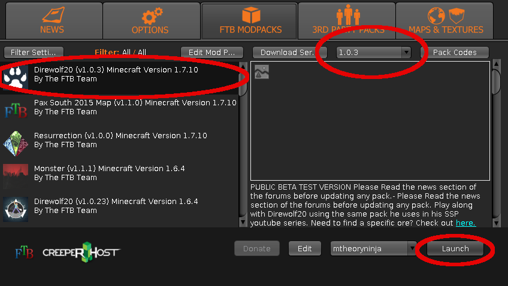

Explore, build, and play on the madworks coworking Minecraft server! Up 24/7 and running the "direwolf" modpack!
Installation Instructions
We run a modified server, you need to install a special launcher:
- Visit: http://feed-the-beast.com/launcher
- Download the .exe (Windows) or the app (Mac)
- Extract and run the app
-
Set up the launcher with these settings:

- Connect to "minecraft.madworkscoworking.org"
- Have fun!